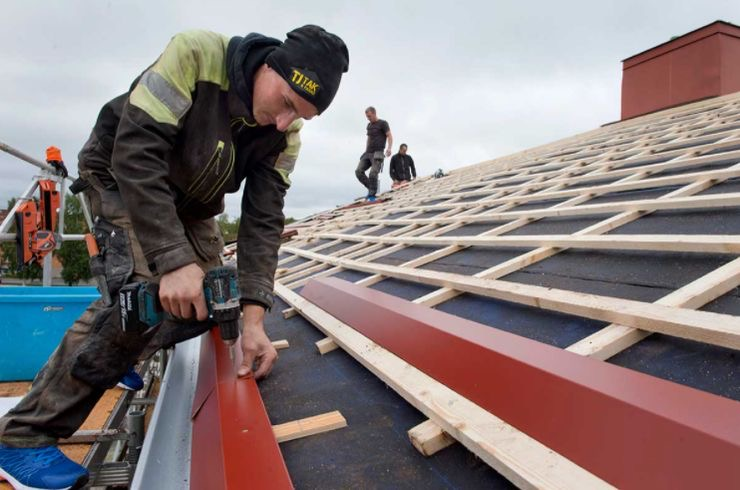
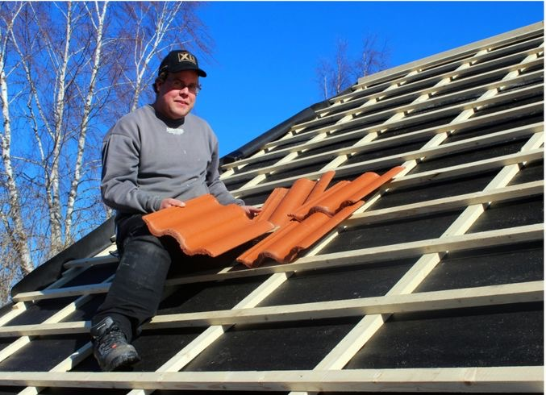
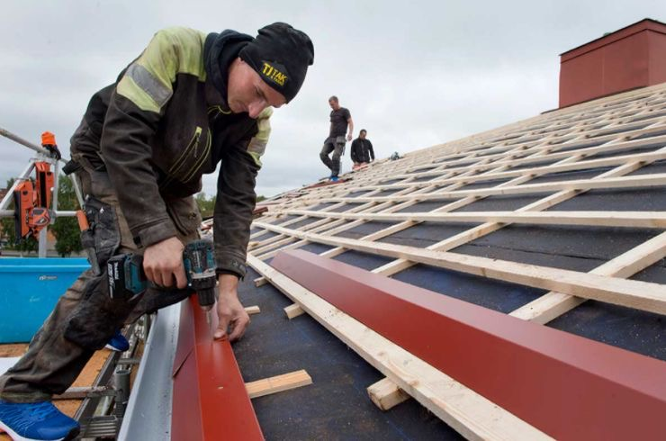
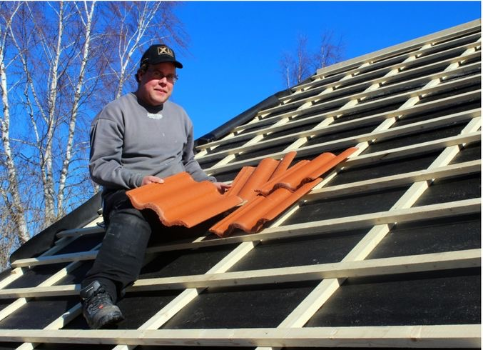

Att lägga om taket är en viktig investering för fastighetsägare i Stockholm, Spånga, Bromma och övriga områden. Scandix Entreprenad AB erbjuder professionell takläggning i hela Storstockholm med fokus på kvalitet och hållbarhet.
Ett nytt tak skyddar huset mot väder och vind, förbättrar energieffektiviteten och ökar fastighetsvärdet. Vi använder moderna isoleringsmaterial och högkvalitativa takbeläggningar med minst 15 års garanti för takläggning Stockholm.
Genom att lägga om taket kan man förhindra läckor, minska värmeförlust och spara pengar på energiräkningen. Ett professionellt utfört tak från vår takläggare Stockholm förbättrar också husets estetiska utseende och ger ett fräscht intryck.
 



Att måla om fasaden är viktigt för att bevara husets utseende och skydda det mot väder och vind i Stockholms klimat. Scandix Entreprenad erbjuder professionell fasadmålning i Stockholm, Spånga, Bromma, Nacka och Huddinge.
Med tiden blir husets fasad utsatt för slitage som orsakar sprickor, avflagning och missfärgning. Genom professionell fasadmålning Stockholm förhindrar man ytterligare skador och ger huset ett nytt utseende. Moderna färgsystem ger långvarigt skydd mot fukt och ökar husets värde.
Välj vår fasadmålning för att skydda huset mot vattenskador och förbättra dess estetiska utseende. Vi använder högkvalitativ färg och material som ökar husets livslängd och minskar underhållskostnaderna.
Dränering av husgrund är en viktig åtgärd för att förhindra fuktproblem i Stockholm, Spånga, Bromma, Nacka och Huddinge. Scandix Entreprenad erbjuder professionell dränering Stockholm för både äldre och nyare fastigheter.
Genom att dränera husgrunden förhindrar man att regnvatten och grundvatten samlas runt huset och tränger in i källaren. Fukt kan orsaka allvarliga skador på husets struktur, träkonstruktioner och elektriska system. Våra dräneringslösningar leder bort vattnet effektivt och håller huset torrt.
En väl dränerad husgrund skyddar mot fuktrelaterade skador som mögel och röta, vilket är särskilt viktigt i Stockholms klimat. Professionell dränering ökar också fastighetens värde och signalerar att fastigheten är välunderhållen.
Som erfaren VVS firma Stockholm och rörmokare erbjuder vi kompletta VVS-tjänster i Spånga, Hässelby, Vällingby, Bromma, Nacka, Saltsjöbaden, Älta, Tyresö, Huddinge, Tumba, Rönninge, Botkyrka, Haninge, Sollentuna, Järfälla och Sundbyberg.
Vi utför professionellt byte av golvbrunn Stockholm och kontroll av golvbrunn. När golvbrunn läcker i Stockholm, Spånga, Bromma eller Nacka hjälper vi snabbt med reparation eller byte. Våra rörmokare säkerställer att alla installationer följer byggnormer.
Vi hanterar vattenläcka Stockholm, läckande rör Stockholm, toalett läcker Stockholm och droppande kran Stockholm. Som din lokala rörmokare i Spånga, Hässelby, Nacka eller Tyresö erbjuder vi snabb service vid akuta VVS-problem.
Vi erbjuder byte av toalett Stockholm, installera dusch Stockholm, installera blandare Stockholm och byta kran Stockholm. Våra tjänster inkluderar även byte av toalett Bromma, installera dusch Bromma, byta kran Bromma, byte av toalett Nacka, installera dusch Nacka, byta kran Nacka, byte av toalett Huddinge, installera dusch Huddinge och byta kran Huddinge.
Vi är specialister på badrumsrenovering VVS Stockholm, rördragning badrum och komplett VVS installation badrum. Kontakta oss för professionell badrumsrenovering i Spånga, Bromma, Nacka, Tyresö eller Huddinge.


Kontakta oss idag för kostnadsfri konsultation och offert på VVS-arbete, badrumsrenovering eller byte av golvbrunn i Stockholm
KONTAKTA OSS